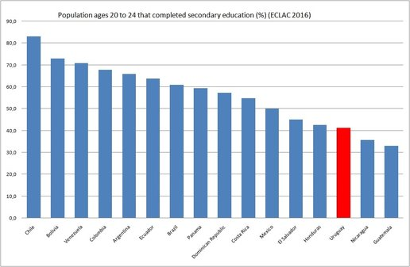
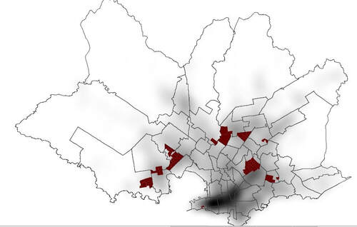
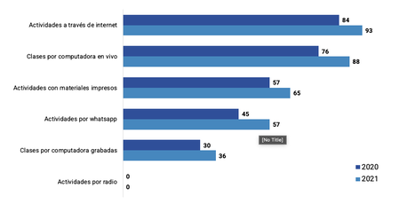

Political economy
Redistribution, inequality, comparative capitalisms and growth.
Political Economy · Latin America · Uruguay
Professor of Political Science
Universidad Católica del Uruguay
Research on redistribution, inequality, comparative capitalisms, skills formation, education, crime, welfare and the dynamics of distribution.
I am Professor of Political Science at Universidad Católica del Uruguay (UCU). I am also co-Director of the Lab on Public Opinion and Social Media (LOPReS).
I obtained my Ph.D. in Political Science at the University of North Carolina at Chapel Hill (2012). My research focuses on the political economy of redistribution and inequality. I am interested in the study of comparative capitalisms, education & skills formation, crime and welfare, and the dynamics of distribution.
I teach courses on political economy, econometrics and research design. I am author of Twittarquía: la política de las redes en Uruguay (2019, Universidad Católica Press/Taurus), Empowering Labor? Leftist Approaches to Wage Policy in Unequal Democracies (2024, Cambridge University Press), and Skills, Values and Development: The Political Economy of Education in Latin America (2025, Oxford University Press).
I am member of the Researchers National System (SNI) in Uruguay, member of EGAP, served as Chair of REPAL's (Red Latinoamericana de Economía Política) Steering Committee (2023–25), Dean of the Graduate School (2023–2026), Founding Director of the Hodos Center for Methods and Data Analysis (2022–2023) and Founding Chair of the Social Sciences Department at UCU (2012–2016). I served as Editor for the Latin American Political Economy Series, Palgrave MacMillan (2019–2023).
I have been a research fellow at the Universidade de Lisboa, Universidad Mayor de Chile and Pontificia Universidad Católica de Chile. During 2026–2027 I will be a Senior Visiting Fellow at the Cluster of Excellence “The Politics of Inequality” at Konstaz University, and a Visiting Research Fellow at the Center for Inter-American Policy & Research (CIPR) at Tulane University.
Redistribution, inequality, comparative capitalisms and growth.
Education, skills formation, labor markets and productive transformation.
Public opinion, political behavior, crime, welfare and distributional dynamics.
with Santiago Carrere. Journal of Economic Policy Reform.
DOIwith Martín Opertti. Journal of Quantitative Description: Digital Media. 2025 (Vol. 5).
Articlewith Aldo Madariaga. Business and Politics. Published online 2024:1–22.
Article Podcast · 8'17"with Gustavo Flores-Macías and Emiliano Tealde. World Development (2024).
Podcast · 7'10"with Aldo Madariaga. Competition and Change Journal. Online First, 2024.
Article Podcast · 10'28"with Eliana Álvarez, Peter Enns, Rosario Queirolo and Martín Opertti. Journal of Elections, Public Opinion and Parties (2023).
Podcast · 6'13"with Aldo Madariaga & Miski Peralta Rojas. Development Policy Review 41(3) (2023).
Articlewith Santiago Anria. Studies in Comparative International Development (2022), 1–22.
Article Podcast · 11'41"with Maria Jose Alvarez R., Rosario Queirolo & Cecilia Rossel. Revista de Ciencias Sociales (2022), 89–115.
Article Podcast · 8'21"with Miguel García & Rosario Queirolo. Colombia Internacional (2022), 3–19.
Articlewith Maria Jose Alvarez R., Rosario Queirolo & Cecilia Rossel. Revista de Ciencias Sociales 2022, (79), 41–52.
Article Podcast · 8'38"with Ignacio Borba, Cecilia Giambruno, Diego Pereira and Juan Ignacio Pereira. Criminal Justice Policy Review 33 (2022), 351–372.
Third World Quarterly, published online October 6, 2020.
Article Online Appendix Podcast · 15'02"with Aldo Madariaga. Journal of Latin American Studies, 52(3), 601–639 (2020).
Article Podcast · 18'50"Third World Quarterly, 40(7), 1378–1393 (2019).
DOI Podcast · 10'14"with Patrick Egan. Economics & Politics, 29(3), 208–236 (2017).
Podcast · 12'55"with Rosario Queirolo. Revista de Ciencia Política 36(2), 589–611 (2017).
Articlewith Federico Rodríguez. CEPAL Review (116), 87–101 (2015).
Article Podcast · 13'53"Latin American Research Review 48(2) (2013).
Article Podcast · 10'28"with Fernando Filgueira. Revista del CLAD Reforma y Democracia, 51, 24–56 (2011).
Article Podcast · 15'53"Books on skills and development, wage policy, and politics in Uruguay.
The Political Economy of Education in Latin America.
Oxford University Press →Leftist Approaches to Wage Policy in Unequal Democracies.
Honorable Mention, Economics and Politics Section Book Award at LASA, 2025.
Book →La política de las redes en Uruguay.
Book →with Aldo Madariaga, in Pallier, Griezmann and Haussermann (eds.), The World Politics of Social Investment. Oxford University Press, 2022.
Chapter Podcast · 10'28"with Juan Geymonat y Martín Opertti, in Berghoff, Basualdo and Bucheli (eds.), Big Business and Dictatorships in Latin America. Palgrave McMillan, 2020.
Book Podcast · 9'36"with Juan Pablo Luna, in Flores-Macias, G. (Ed.), The Political Economy of Taxation in Latin America. Cambridge University Press, 2019.
Chapter Podcast · 9'49"with Evelyne Huber, in The Oxford Handbook of Comparative Welfare States, 2010.
in Noblit y Pink (eds.), International Handbook of Urban Education, 2007.
2026
De vuelta en el sur...
Desde mi regreso a Uruguay, allá por 2012, he estado involucrado en diferentes iniciativas institucionales y de revisión de estándares académicos. Los resultados han sido escasos, pero...
Al llegar acepté el desafío de fundar el Departamento de Ciencias Sociales y Políticas —Ciencias Sociales desde 2019— en UCU, siendo su primer director entre 2012–2016. Junto a colegas excepcionales, generamos un lugar bastante único desde el que intentamos hacer academia con rigor y estándares internacionales. Nuestro DCS también alberga la Escuela de Métodos y Análisis de Datos, otra iniciativa bien interesante y única en la región.
Participo desde 2011 en el espacio Razones y Personas junto a un grupo de colegas de diversas disciplinas. La idea es pensar críticamente sobre Uruguay y sus desafíos.

Education
No hay desarrollo sin educación. Uruguay tiene una de las peores tasas de egreso de secundaria de America Latina, con lo que seguramente esta amenazando sus propias oportunidades de desarrollo, de mejora de la calidad de vida de la población.
“Thus, to understand education policy decisions requires answering two questions: Whose support do political leaders need to stay in power? And what sort of education do those citizens want?”— Kosack, Stephen. 2012. The Education of Nations, p. xi

Crime & drugs
El delito asociado a drogas es otro desafío central de política publica en Uruguay. Junto a colegas hemos estado trabajando en estos temas a partir de modelos cuasi-experimentales y experimentales para entender el efecto de algunas políticas de intervención focalizada en el crimen, así como en la relevancia de la denuncia como elemento de política publica.
Financiado por ANII, Fondo FSSC_1_2018_1_147750 (2019–2020)
Generamos una serie de PODCASTS sobre el tema, que se pueden escuchar aquí en Spotify:
Project dissemination →
COVID-19 & education
Durante los años de pandemia, Uruguay logró resultados singulares en la región respecto del uso de tecnologías para mantener el vinculo entre docentes y alumnos, y lograr una disrupción menor del proceso educativo que otros países en la región. Lee más sobre esto en esta nota en el blog del BID en base a un trabajo al respecto que realizamos en varios países.
Read the IDB post →